Kuzey Marmara & TEM Koridoru Canlı Devriye Radarı
Kuzey Marmara & Kurtköy Oto Kurtarma Hizmetleri
Kuzey Marmara Otoyolu, TEM, Kurtköy, Gebze ve Pendik merkezli filomuzla binek, SUV, spor, ağır vasıta ve yol yardım ihtiyaçlarınızda kesintisiz hizmet veriyoruz.

Kayar Kasa Oto Çekici
Hidrolik kayar platform ile binek ve SUV araçları tampon sürtmesi olmadan, kaskolu ve emniyetli olarak taşıyoruz.
- 10-15 dakikada hızlı intikal
- Kurtköy, KMO gişeleri ve servislere nakil
- Taşıma ve yol kaskosu güvencesi

Otoyol Oto Kurtarma
Kuzey Marmara Otoyolu ve TEM güzergahında tepe flaşör kuleli emniyet araçlarımızla hızlı ve can güvenliği öncelikli tahliye.
- Otoyol güvenlik koridoru kurulumu
- Gişeler, viyadük ve tünel müdahalesi
- 15 dakikada yerinde intikal

Kaza & Vinç Kurtarma
Şarampole yuvarlanma, bariyer sıkışması, devrilme veya ağır hasarlı kazalarda güçlü vinç tertibatıyla acil kurtarma operasyonu.
- Çift halatlı hidrolik vinç sistemi
- Otoyol güvenlik önlemleri ve flaşör
- Sigorta ve yetkili servise teslimat

Lüks & Spor Araç Taşıma
Porsche, Ferrari, Tesla ve basık şasili spor otomobiller için özel sıfır dereceli rampa uzantısıyla sürtünmesiz hasarsız taşıma.
- Alçak şasi ve basık araç uyumu
- Özel tekerlek sabitleme aparatları
- Yüksek teminatlı emtia kaskosu
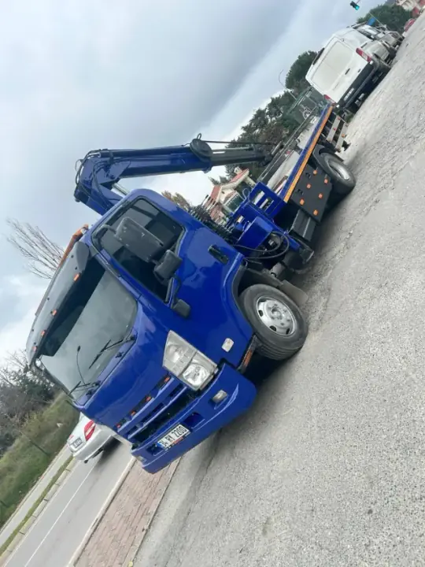
Ahtapot Çekici
Şanzımanı kilitlenen, el freni takılı kalan veya dar alanlarda sıkışan araçları tekerleklerinden havaya kaldırarak hasarsız taşıma.
- Kilitli şanzımana sıfır sürtünme
- Dar alanlardan vinçle tahliye
- %100 jant korumalı bağlama
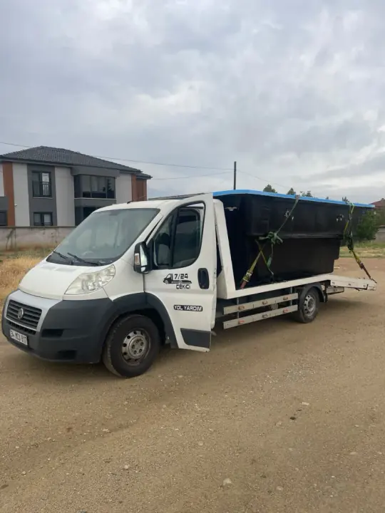
Kapalı Otopark Çekicisi
Viaport ve AVM'lerin 1.90m - 2.00m tavanlı bodrum otoparklarına rahatça inebilen özel alçak kabinli kurtarıcı araç filosu.
- -1, -2, -3 katlardan araç çekimi
- Dar manevra kabiliyeti
- Yerinde akü takviyesi ve lastik
Diğer 7/24 Acil Yol Yardım ve Özel Taşıma Hizmetlerimiz
Yerinde akü takviyesi, lastik onarımı, ağır vasıta çekimi ve şehirler arası güvenli araç transferi.
Hizmet Bölgelerimiz
Bulunduğunuz güzergahı seçerek ortalama intikal süresi, yol ve kavşak analizlerini inceleyebilir, doğrudan nöbetçi ekibimizi arayabilirsiniz.
Kurtköy Çekici
📍 Viaport AVM, Kurtköy Gişeleri, Yenişehir Mah., Çamlık, Ankara Caddesi, Sabiha Gökçen Bağlantısı
Kuzey Marmara Çekici
📍 Kurtköy Gişeleri, Kurnaköy Gişeleri, Mecidiye Tesisleri, Akse Gişeleri, Sevindikli, Mermerciler Viyadüğü
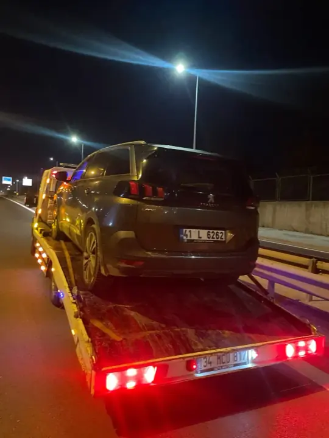
TEM Otoyolu Çekici
📍 Kurtköy TEM Çıkışı, Mehmetçik Vakfı Tesisleri, Şekerpınar Gişeleri, Gebze Doğu & Batı Gişeleri, Tuzla Yan Yol
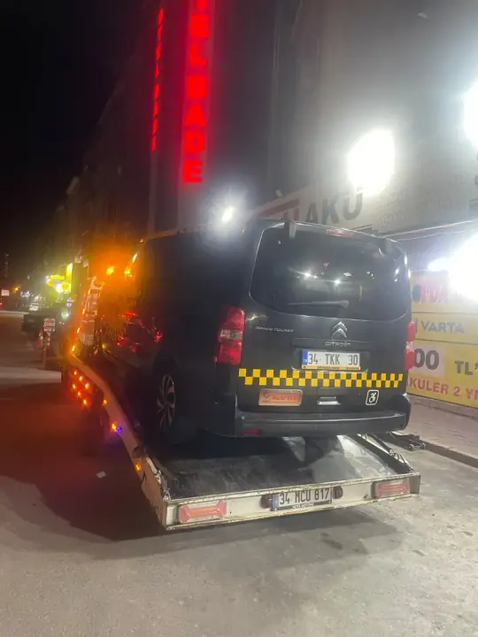
Gebze Çekici
📍 Gebze OSB, GOSB Meydanı, Barış Mahallesi, Tatlıkuyu Köprüsü, Eskihisar Feribot Yolu, D-100 Gebze Geçişi

Pendik Çekici
📍 Pendik Köprüsü, Kaynarca Kavşağı, Pendik Marina, Velibaba Sanayi Caddesi, Kurtköy Bağlantı Yolu
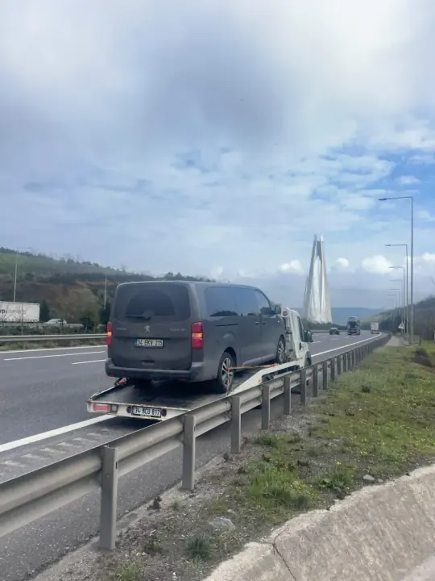
Çayırova Çekici
📍 Akse Mahallesi, Çayırova Köprüsü, D-100 Kocaeli Sınırı, Şekerpınar Bağlantısı
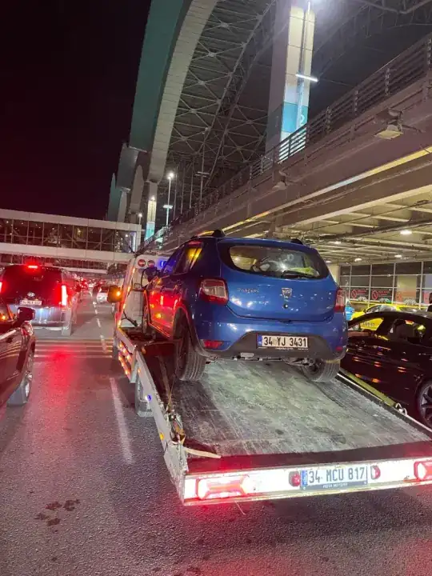
Sabiha Gökçen Havalimanı Çekici
📍 Havalimanı Katlı Otoparkı, İç/Dış Hatlar Girişi, Kargo Terminali, Havalimanı Bağlantı Viyadüğü

Tuzla Çekici
📍 İçmeler Kavşağı, Aydınlı Yolu, Deri OSB, Akfırat / Tepeören, Tuzla Piyade Okulu Çevresi
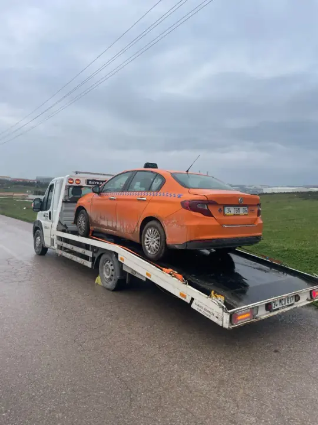
Şekerpınar Çekici
📍 Şekerpınar TEM Gişeleri, TAYSAD OSB, Lojistik Depolar Aksı, KMO Akse Çıkışı
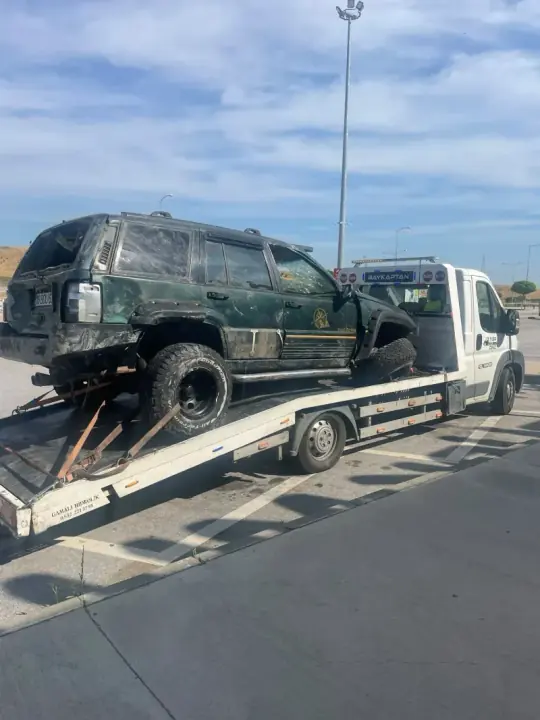
Dilovası Çekici
📍 Dilovası Rampası, Mermerciler OSB, Osmangazi Köprü Bağlantısı, Diliskelesi
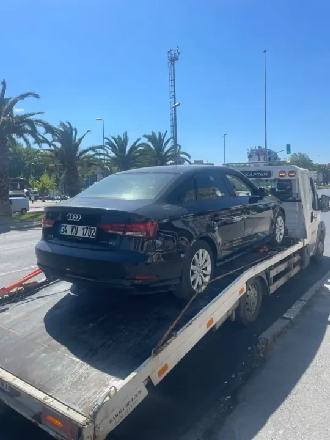
Sultanbeyli Çekici
📍 TEM Sultanbeyli Gişeleri, Fatih Bulvarı, Gölet Parkı Çevresi, Paşaköy Ayrımı

Sancaktepe Çekici
📍 Samandıra Gişeleri, Paşaköy KMO Katılımı, Sarıgazi Meydanı, Rings AVM Çevresi
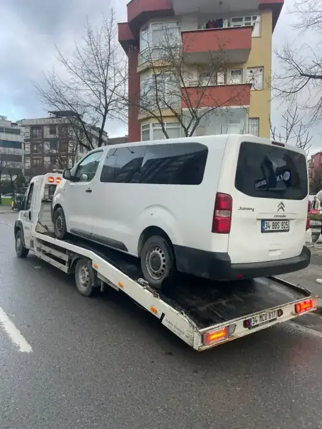
Kurnaköy & Mecidiye Çekici
📍 Kurnaköy Gişeleri, Mecidiye Tesisleri, KMO km 120-140 Arası, Akfırat Ayrımı
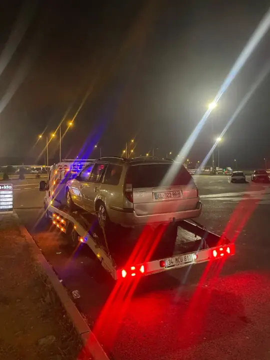
Darıca Çekici
📍 Bayramoğlu Sahili, Darıca Millet Bahçesi, Eskihisar İskele Yolu, Cami Mahallesi
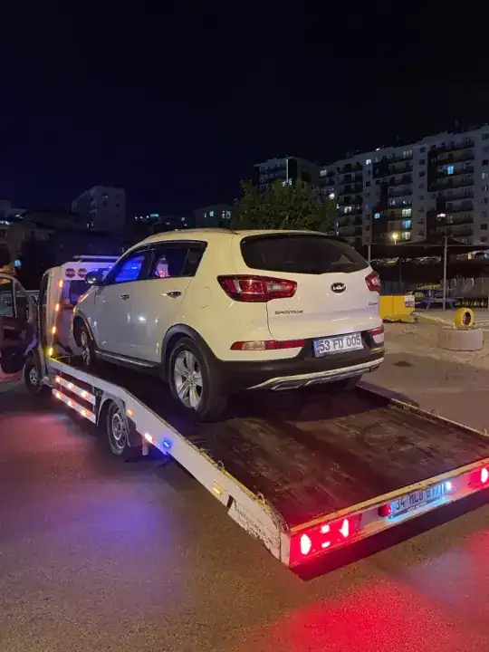
Ömerli & Reşadiye Çekici
📍 KMO Reşadiye Gişeleri, Ömerli Baraj Yolu, Hüseyinli Kavşağı, Şile Yolu Ayrımı
Kartal Çekici
📍 Samandıra KMO Bağlantısı, Yakacık Rampaları, Kartal Köprüsü, Soğanlık E-5, Kartal Sahil Yolu
Maltepe Çekici
📍 Başıbüyük KMO Çıkışı, Küçükyalı Kavşağı, Zümrütevler, Süreyyapaşa Rampası, Maltepe Sahil Yolu
Körfez & Hereke Çekici
📍 Hereke Tünelleri, KMO Doğu Gişeleri, Körfez Gişeleri, Hereke Viyadüğü, Yarımca Sanayi Liman Yolu
Neden Marmara Çekici?
15 yılı aşkın otoyol kurtarma deneyimimiz, kurumsal güvencelerimiz ve şeffaf hizmet ilkelerimizle yolda kalan sürücülerin ilk tercihiyiz.
10-15 Dakikada Hızlı İntikal
KMO gişeleri, TEM ve sanayi kavşaklarında konuşlu nöbetçi ekiplerimiz sayesinde olay yerine en kısa sürede ulaşırız.
%100 Nakliyat Emtia Kaskosu
Yükleme anından teslimata kadar tüm araçlar tam kapsamlı taşıyıcı sorumluluk sigortası güvencesindedir.
Şeffaf & Sabit Fiyat Sözü
Telefonda onaylanan ücret dışında asla sürpriz ek masraf çıkarılmaz. Otoyol ücretleri ve km baştan netleştirilir.
Sıfır Açılı Lüks & Elektrikli Rampa
Basık spor araçlar ve elektrikli araçlar için sürtünmeyi önleyen özel sıfır dereceli rampa uzantıları kullanılır.
Mobil POS ile Kredi Kartı / Taksit
Kurtarıcı araçlarımızdaki mobil POS ile tüm kredi kartlarıyla tek çekim veya taksit imkanı mevcuttur.
15+ Yıllık Otoyol Saha Deneyimi
Zorlu otoyol viyadükleri, tüneller, şarampol ve ağır kaza durumlarında profesyonel vinç ve kurtarma operatörlüğü.
Çekici Sürecimiz Nasıl İşler?
Yolda kaldığınız andan itibaren 4 şeffaf adımda aracınızı güvenle istediğiniz noktaya ulaştırıyoruz.
1. Bize Ulaşın & Konum Atın
0536 769 43 24 numaramızı tek tıkla arayın veya WhatsApp üzerinden canlı konumunuzu iletin. Santralimiz 30 saniye içinde yanıt verir.
30 Saniyede Yanıt2. Net & Sabit Fiyat Teyidi
Mesafe ve araç tipinize göre telefonda net fiyat teyit edilir. Ek masraf veya sonradan sürpriz ücret talep edilmez.
Sürpriz Ücret Yok3. 10-15 Dk Hızlı İntikal
Kurtköy, KMO ve TEM arterlerinde konuşlu nöbetçi kayar kasa çekicimiz GPS yönlendirmesiyle rekor sürede yanınıza ulaşır.
10-15 Dk Varış4. Kaskolu & Sıfır Hasarlı Teslimat
Aracınız özel aparatlarla şasiye temas etmeden platforma yüklenir; %100 nakliyat sigortasıyla dilediğiniz yetkili servise ulaştırılır.
%100 KaskoluOtoyolda Kaldığınızda 60 Saniyede Yapılması Gerekenler
Kuzey Marmara Otoyolu ve TEM gibi 140 km/s hız koridorlarında can güvenliğiniz her şeyden önce gelir. Çekicimiz gelene kadar bu 4 hayati adımı uygulayın:
Dörtlüleri Açın & Emniyet Şeridine Geçin
Aracınızı mümkün olduğu kadar yolun en sağına çekin. Direksiyonu sağa doğru kırın ve flaşörleri derhal aktif edin.
Reflektörü 150 Metre Geride Konumlandırın
Yüksek hız koridorlarında arkadan gelen araçların sizi fark edebilmesi için reflektörü aracın en az 150 metre gerisine yerleştirin.
Araçtan Çıkıp Bariyer Arkasına Geçin
Kesinlikle aracın içinde beklemeyin! Sağ kapıdan inerek çelik bariyerlerin arkasındaki güvenli alana sığının.
Tek Tıkla GPS Canlı Konumunuzu Gönderin
Sitemizdeki GPS butonuna basarak koordinatlarınızı WhatsApp ile iletin; en yakın nöbetçi kurtarıcımız 10 dakikada yanınızda olsun.
Gerçek Saha Kurtarma Vakalarımız
Kuzey Marmara Otoyolu, Kurtköy ve çevre arterlerde gerçekleştirdiğimiz başarılı operasyonlardan kareler.
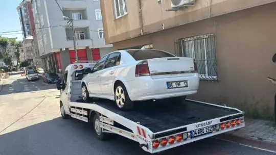
Binek ÇekiciKurtköy Viaport Çıkışı Transferi
Şanzıman arızası yaşayan sedan aracın yetkili servise emniyetli nakli.
SUV / 4x4
KMO Mecidiye Mevkiinde Lastik Kurtarması
Yüksek hızda lastiği yarılan SUV aracın tepe lambalı koruma eşliğinde taşınması.
 Lüks & Spor
Lüks & Spor
Sabiha Gökçen Özel Araç Transferi
Özel rampa aparatlı sıfır sürtünmeli spor otomobil nakliyesi.
Sürücülerin Bizimle Deneyimleri
Otoyolda ve sanayi kavşaklarında hizmet verdiğimiz sürücülerimizin gerçek yorumları.
Viaport AVM otopark çıkışında aracımın şanzımanı kilitlendi. Aradıktan 11 dakika sonra kayar kasa araç geldi. Kurtköy nöbetçi ekibi gerçekten çok profesyoneldi. Tampona en ufak sürtme olmadan Pendik'teki servise ulaştırdılar. Telefonda ne fiyat verdilerse kuruşu kuruşuna o alındı.
Kuzey Marmara Otoyolu Kurnaköy gişelerine 2 km kala yüksek hızda arka lastiğim parçalandı. Emniyet şeridinde ailemle çok tedirgin olduk. 13 dakikada tepe lambalı koruma aracıyla geldiler, otoyol güvenliğini alıp aracı yüklediler. Hızlı ve güvenilir hizmet için teşekkürler.
Şirket aracımız Gebze Organize Sanayi Bölgesi girişinde elektrik arızası nedeniyle stop etti. Mobil POS cihazıyla faturalı kredi kartı ödemesi yaptık. Zamanında teslimat ve hasarsız taşıma için kesinlikle öneriyorum.
Havalimanı bağlantısında aniden hararet yaptı. Gece vakti tek başımaydım ve çok korkmuştum. Çağrı merkezindeki beyefendi hemen sakinleştirdi, 12 dakikada çekici ulaştı. Çok saygılı ve yardımsever bir ekip. Gözünüz kapalı güvenebilirsiniz.
Sıkça Sorulan Sorular
Kuzey Marmara Otoyolu, Kurtköy ve çevre ilçelerde oto çekici hizmetlerimiz hakkında tüm merak ettikleriniz.
Kurtköy gişeleri, KMO viyadükleri, Gebze OSB ve Pendik bağlantı kollarındaki nöbetçi araçlarımızla çağrınızdan sonra ortalama 10 ila 15 dakika içerisinde aracınızın yanına ulaşıyoruz.
Evet. Filomuzdaki tüm kurtarıcılar %100 nakliyat emtia sigortası ve taşıyıcı sorumluluk kaskosu kapsamındadır. Aracınız platforma yüklendiği andan servise indirilene kadar tam güvendedir.
Kesinlikle hayır. Bulunduğunuz yer ve gidilecek adres için telefonda onaylanan sabit fiyat geçerlidir. Teslimat sırasında asla sürpriz ek masraf çıkarılmaz.
Evet, tüm araçlarımızda mobil POS cihazı mevcuttur. Kredi kartı ile tek çekim veya taksitli ödeme yapabilir, anında resmi e-faturanızı alabilirsiniz.
Evet. Basık otomobiller için özel sıfır açılı rampa aparatımız bulunmaktadır. Elektrikli ve otomatik vitesli araçlar için ise tekerlek dolly arabacıkları kullanarak şanzımana zarar vermeden taşıma yapıyoruz.